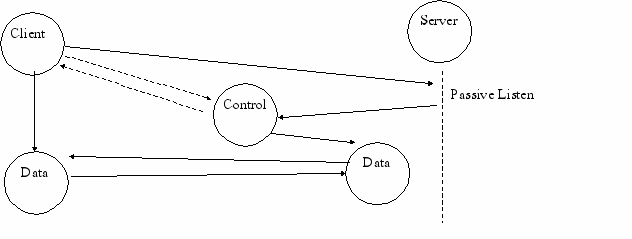

Organization of the Internet:
IAB(Internet Architecture Board)
- Autonomous organization, 10 task forces, several annual meetings,oversees IETF,IRTF
IETF(Internet Engineering Task Force)
- Organized in working Groups, reports: Internet Drafts & RFC's.
Layers:
A. Peer layers talk to eachother
B. Higher layers encapsulated in lower layers
C. Lower layers transparent to higher layers
|
OSI Layers |
TCP/IP Layers |
|
7. Application |
Application (ftp|dns|ping) |
|
6. Presentation |
|
|
5. Session |
|
|
4. Transport |
End-End(tcp|udp|raw ip) |
|
3. Network |
Datagram(ip&icmp&igmp) |
|
2. Data Link |
Device Driver(enet, rs-232) |
|
1. Physical |
|
D. Frames reach lower level for Demultiplexing into correct module of upper layer
1. Ethernet Frame->(Demultiplexing) ->IP Module,ARP Module,RARP Module
2. IP Datagram-> (Demultiplexing) -> ICMP,UDP,TCP
TCP/IP Protocols:
A. Universal Interconnection(Different Comptrs/Netwks/Phys Layers Communicate)
B. End to End Acknowledgement(Dest. Acknowledges to Source- not each hop)
C. Application Protocol Standards(Standards for Common Applications)
D. Addressing:
|
Application |
Domain Names, Sockets |
->IP:DNS |
|
TCP/UDP |
Ports(16b unsigned ints) |
|
|
IP |
IP Address(32b unsigned ints) |
->Name:DNS ->MAC:ARP |
|
Link Layer |
Ethernet=48b MAC Address |
->IP:RARP |
E. Encapsulation:
1. General:
As packet leaves App. towards physical layer:
(app:hdr?|data)->(trans:tcp hdr w/src,dst ports|data)->(net:ip hdr w/src,dst ip|data)
->(link:enet header w/src,dst mac|data|enet trailer)
2. IP Encapsulation
[ethernet header|ipv4 header| data(tcp, etc.)]
TCP:
A. End to End
B. Error correction
Transport Layer:
A. UDP(User Datagram Protocol)
1. Provides unreliable connectionless delivery service
2. Uses IP to transport messages b/w machines
3. Adds ability to distinguish among multiple destinations within a host(Ports)
4. Application accepts full responsibility for handling the reliability
5. May work well on LAN, Not well on WAN
B. UDP Encapsulation
[Frame Header[IP Header[UDP Header|UDP Data]]]
C. UDP Message Format
0 16 31
|
UDP Src Prt |
UDP Dst Prt |
Src Prt: Optionally specifies port to reply to OR 0 Dst Prt: Used to Demultiplex datagrams Length: Lngth of UDP Dtgrm hdr & data in B's(min=8) Checksum: Computed using UDP Pseudo-header OR 0 |
|
UDP Mesg Length |
UDP Check |
|
|
Data |
||
|
... |
||
D. UDP Pseudo-header Format
0 8 16 31
|
Src IP Address |
||
|
Dst IP Address |
||
|
Zero |
Proto |
UDP Length |
Proto: Protocol Code(UDP=17)
Length: Length of UDP Datagram without the Pseudo-Header
E. Reserved UDP Ports
|
0 |
Reserved |
13 |
Daytime |
37 |
Time |
53 |
Nameserver |
123 |
Ntp |
|
7 |
Echo |
15 |
Netstat |
42 |
Name |
67 |
Bootps |
161 |
Snmp |
|
9 |
Discard |
17 |
Qotd |
43 |
Whois |
68 |
Bootpc |
514 |
Syslog |
|
11 |
Systat |
19 |
Chargen |
69 |
Tftp |
111 |
SunRPC |
525 |
Timed |
F. TCP(Transmission Control Protocol)
1. Reliable Stream Transport Service
2. Stream Orientation- stream of bits or bytes/sequence
3. Virtual Circuit Connection, Call based
4. Receipt of data verified
5. Buffered Transfer(Can force early transmission with PUSH)
6. May be Fragmented
7. Full Duplex Connection
G. TCP Ports, Connections, & Endpoints
1. Uses Connection, Not the port.
2. Connection defined by pair of endpoints, 1 port shared by multiple connections
3. Concurrent Service to multiple connections w/o seperate port# foreach connection
4. Passive Open (Server application agrees to accept connections on a port)
5. Active Open (Client application requests active open connection)
6. Data exchanged after connection verified
7. TCP Modules guarantee reliablity of transmission
H. TCP Segment Format::
0 4 10 16 24 31
|
Src Prt |
Dst Prt |
|||
|
Seq # |
||||
|
Ack # |
||||
|
Hlen |
Rsrvd |
Code Bits |
Window |
|
|
Checksum |
Urgent Pointer |
|||
|
Options |
Padding |
|||
|
Data |
||||
|
... |
||||
Port #'s: Identify applications at endpoints of connection
Seq #: Identifies position of segment in sender's sequence
Ack #: Identifies the # of octet the source expects to receive next
Hlen: Length of Segment Header in 32b mutiples (variable option field)
Code Bits: Determine purpose and contents of the segment
|
URG |
Urgent |
PSH |
Request push |
SYN |
Sync. Seq. # |
|
ACK |
Acknowledgement |
RST |
Reset Connection |
FIN |
End of Stream |
NOTE:URG set when sending "Out of Band" - ie. Interrupts, Aborts
Also Set Urgent Pointer = position in window where urgent data ends
Window: Indicates buffer size of receiving connection,
1. Receiver sets=0 when buffer full
2. Transmitter pauses and probes to prevent deadlock
3. Receiver responds to probe with Ack and Window!=0 to resume
Max Segment Size Option:
1. Negotiate max seg size for transfer b/w endpoints
2. If not on same physical unit or variable MTU= 536
Checksum: Uses Pseudo Header(like UDP)
0 8 16 31
|
Src IP Address |
||
|
Dst IP Address |
||
|
Zero |
Proto |
TCP Length |
Proto: Protocol Code(6=TCP)
I. TCP Acknowledgement
1. Positive Ack w/retransmission timers:
Send Packet1, Receive Ack1, Send Packet2, Timeout, Send Packet2, Receive Ack2
2. Sliding Window(Increases efficiency- keeps network completely saturated w/packets)
a. Window = n segments to be sent at a time
b. Foreach Ack, Slide window to include new segment
Send Packets1234, Receive Ack1, Send Packet5, Receive Ack2,Send Packet6
3. Adaptive Retransmission Algorithm
a. TCP Monitors connection performance and adjusts timeout accordingly
b. RTT- Estimated Round Trip Time
c. RTT updated w/each ack, Z(7/8) prevents wild changes
RTTn=Z*RTTn-1 +(1-Z)*New_Round_Trip_Sample
d. Problems: Acks from retransmitted segments disturb RTT measurment
4. Karn's Algorithm
a. When computing RTT ignore samples from previously transmitted segments
b. Save timeout from retransmitted packets for subsequent packets until valid sample
c. Use backoff strategy, ie. Timeout=B*RTT,B>1
5. Response to Congestion
a. Multiplicative Decrease Congestion Avoidance
Reduce window by .5(min 1 segment)+Exponential Backoff of retransmission timer
b. Slow Start Additive Recovery(New Connection||After Congestion)
Start window=1 segment & increment foreach ack
6. Establishing a Connection
|
Snd Syn, seq=x |
-> |
Rcv Syn |
|
Rcv Syn+Ack |
<- |
Snd Syn,seq=y,Ack x+1 |
|
Snd Ack y+1 |
-> |
Rcv Ack |
7. Closing a Connection
|
Snd Fin, seq=x |
-> |
Rcv Fin |
|
Rcv Ack |
<- |
Snd Ack x+1 & Tell App |
|
Rcv Fin & Ack |
<- |
Snd Fin,seq=y,Ack x+1 |
|
Snd Ack y+1 |
-> |
Rcv Ack |
IP(RFC791):
A. Characteristics
1. Functions on Ethernet(RFC894), Token Ring, SLIP(RFC1055), PPP(RFC1353),
X25(RFC877), FDDI(RFC1188), ATM(RFC1483/1577)
2. Hop by Hop
3. No Retries- For services where send/receive without guarantees are necessary
B. Functions
1. Route Packets
2. Fragment/Defragment packets according to link layer MTU
3. Handle IP options
4. Send/Receive ICMP messages
C. Addressing
1. 32 bits, dotted decimal notation 1.2.3.4(0-255)
2. Associated w/interface, not w/machine
3. A computer with >1 ip address is multi-homed but not necessarily router
4. 3 types: Unicast, Broadcast, Multicast
A. Muticast
1.One Addr specifies multiple destinations(a group)
2.Cost is the same as on datagram
3. Dynamic group Management - access control optional
4. Hosts can belong >=0 groups
5. Permanent Groups possible
6. Delivery is Best Effort
7. IGMP used to register dynamic multicast group membership with routers
5. Problems: Wastefull address assignment
6. Structure
a. [Network|Host] or [Network|Subnet|Host]
b. Subnet Mask used to determine subnet part of Host section
(dst ip & netmask == local ip & netmask )? Local net: foreign net;
|
Class |
Bits |
Net (# bits) |
Host (# bits) |
Range |
|
A |
0 |
7 |
24 |
0.0.0.0-127.255.255.255 |
|
B |
10 |
14 |
16 |
128.0.0.0-191.255.255.255 |
|
C |
110 |
21 |
8 |
192.0.0.0-223.255.255.255 |
|
D |
1110 |
28 |
0 |
224.0.0.0-239.255.255.255 (Multicast) |
|
E |
11110 |
27 |
0 |
240.0.0.0-247.255.255.255 (Reserved) |
D. Routing:
1. Standard Routing Table- [net addr, next hop addr]
2. Unified IP Routing Table – [netmask, net addr, next hop addr]
3. Routing Algorithm(datagram, routing_table){
dst=datagram->dst;
netid=getNetid(dst);
foreach nic(localsystem){
if(netid==nic->netid) then
mac=getMAC(dst);
forward(datagram,mac);
exit;
}
error_flag=1;
foreach entry(routing_table){
tmp=dst & netmask;
if(tmp==entry->net addr) then
forward(datagram,entry->next hop addr);
error_flag=0;
}
if(error_flag) then
routing_error(datagram);
}
E. Datagram Format
0 4 8 16 19 24 31
|
Vers |
Hlen |
Srvc Type |
Total Length |
||
|
Identification |
Flags |
Frgmnt Offset |
|||
|
TTL |
Protocol |
Header Checksum |
|||
|
Source IP Address |
|||||
|
Destination IP Address |
|||||
|
IP Options |
Padding |
||||
|
Data |
|||||
|
Data |
|||||
Hlen: Header Length in units of 32 bits(min 5=20 Bytes)
Srvc Type: Indicates importance of datagram- congestion control
0 2 3 4 5 7
|
Precedence |
Delay |
Throughput |
Reliability |
Unused |
Flags: First bit reserved
2nd bit: 0=Can be Fragmented, 1=Can't be Fragmented
3rd bit: 0=Last Segment, 1=More Segments to come
Protocol: Name of protocol for Layer 4(6=TCP,17=UDP,1=ICMP)
Total Length: Max Length is 64Kb, <=576B recommended(minimum MTU)
TTL: Max Hop Count, At router ttl--, if ttl==0 discard & snd icmp ttl exceeded; !Loops
IP Options: ! Very used, variable length encoding, Tag/Lngth/Value, multiples of 32b
1. Option Classes-
0: control
1: reserved for future use
2: debugging and measurement
3: reserved for future use
2. Option Types-
0: End of Options
1: Noop(alignment)
2: Security(RFC791 page 17)
3: Loose Source Routing(Force part of Path)
4: Internet Timestamp
7: Record Route
9: Strict Source Routing(Force all of Path)
Header Checksum:
1. Mathematical check for good header
2. Same alg. used by TCP/UDP
3. Routers must recalculate checksum b/c ttl changes at every hop.
F. IP Fragmentation
1. IP fragments when outgoing packet is too large for MTU of interface
2. Fragments reassembled at destination
3. Cons- If any fragment lost, entire datagram must be resent(Not IP, TCP, not UDP)
4. Pros- Simple, fragments routed seperately.
5. Path MTU (find lrgst common MTU over the entire path) instead of fragmentation
6. MSS(Maximum Segment Size=576B)- Max packet size to be sent over router
G. ICMP (Internet Control Message Protocol)
1. Allows gateways to send error/control messages to other gateways or hosts
2. Provides communication b/w IP software on one machine and another
3. Only reports error conditions to the original source
The source must pass the message to the application
4. No error reporting on ICMP Messages.
H. ICMP Message Format
Type: 8b int - Message format varies according to message type
|
0: Echo Reply |
13: Timestamp Request |
|
3: Destination Unreachable |
14: Timestamp Reply |
|
4: Source Quench |
15: Information Request (obsolete) |
|
5: Redirect |
16: Information Reply (obsolete) |
|
8: Echo Request |
17: Address Mask Request |
|
11: Time Exceeded for datagram |
18: Address Mask Reply |
Code: 8b - Additional info about message
Examples:
Echo Request/Reply(Type 0||8):
0 8 16 31
|
Type |
Code |
Checksum |
|
Identifier |
Sequence Number |
|
|
Optional Data |
||
|
... |
||
Destination Unreachable(Type 3):
0 8 16 31
|
Type |
Code |
Checksum |
|
Unused, Must be 0's |
||
|
Inet Hdr + first 64b of datagram |
||
|
... |
||
I. Application Level Use of ICMP
a. Traceroute- Find routers b/w src and dst: Send IP packets with incr. TTL until dst
b. Ping
Link Layer(Ethernet):
A. Addressing
1. 48 bit integer assigned to network hardware
2. Hardware manufacturers get addresses allocated from IEEE
3. Three types (Physical address of one i/f, network broadcast(all 1's), multicast)
4. Resolved to/from IP Address via RARP/ARP
B. ARP(Address Resolution Protocol - RFC826)
1. Finds MAC Address starting from IP Address
2. Broadcasts request with IP Address, Receives Unicast Reply with MAC
3. Values Stored in Cache
4. Implemented in Driver- (Ethernet Frame type 0806) Not in IP
4. Problem- Same Network Segment ONLY
C. Proxy ARP
1. Solves Network Segment Problem of ARP-
The gateway returns it's MAC Address for IP Addresses on it's other i/f's and
forwards packets according to their IP Addresses
D. ARP Packet Format
0 8 16 31
|
HW Type |
Protocol Type |
|
|
HLEN |
PLEN |
ARP OP Code |
|
Sender MAC (Bytes 0-3) |
||
|
Sender MAC (Bytes 4-5) |
Sender IP (Bytes 0-1) |
|
|
Sender IP (Bytes 2-3) |
Target MAC (Bytes 0-1) |
|
|
Target MAC (Bytes 2-5) |
||
|
Target IP |
||
HW Type:(ARP protocol extensible)Ethernet=1
Protocol Type:IP=0x800
HLEN:Length of HW Address in Bytes, MAC=6
PLEN:Length of IP Address in Bytes, IP=4
Op Code:
1: Arp Request
2: Arp Reply
3: Rarp Request
4: Rarp Request
Sender MAC:
Request Packet- The MAC making the request, Reply Packet - The Answer.
Target MAC:
Request Packet- 0, Reply Packet - The MAC which made the request.
E. RARP(Reverse Address Resolution Protocol – RFC903)
1. Finds IP Address starting from MAC Address
2. Broadcasts request w/MAC, Receives Reply w/IP from RARP Server
3. Used by machines at boot
4. Ethernet Frame Type 8035, IEEE802.3 Frame Type 32821
4. Same Packet Format as ARP
Application Layer:
A. Addressing (Domain Name System - RFC1034/5)
1. Provides mapping from human readable names to IP addresses
2. Hierarchial Name Space
3. Requires online name servers to exchange requests (distributed database)
4. Use name resolvers to query one or more servers
5. Try local servers first
B. Client/Server Paradigm
1. Applications (sometimes OS) organized in Client/Server Form
|
Iterative Form(UDP) |
Concurrent Form(TCP) |
|
do forever{ wait/read client message process message write ACK to client } |
do forever{ wait for connection fork child does i/o & exits } |
B. Client/Server Paradigm(cont.)
2. Usually Message Oriented
3. Client speaks app. Protocol to remote server that processes each message
C. Client/Server Protocols
1. Telnet
a. Remote Terminal Protocol
b. Uses TCP Connection
c. No Protocol Header
d. Supports Negotiation
e. Symmetric
f. Defines Network Virtual Terminal(NVT)
A. Allows different systems to interoperate
B. Defines how data and commands are sent across the Internet
C. All communication uses 8 bit Bytes
D. Uses 7bit ASCII for data, High bits used for commands
E. Client/Server convert from local to NVT format and vice versa
User Terminal<--Client frmt-->(Client)<--NVT-->(Server)<--Server frmt-->Server OS
2. Telnet Commands
a. Basic Commands are 2 Bytes: [IAC=255|Command Code]
b. To Send Data=255(same as IAC): [IAC|IAC]
|
240 |
Status End |
244 |
Intrpt Process |
248 |
Erase Line |
252 |
Won't |
|
241 |
NOP |
245 |
Abort Output |
249 |
Go Ahead |
253 |
Do |
|
242 |
Data Mark |
246 |
Are You There |
250 |
Status Begin |
254 |
Don't |
|
243 |
Break |
247 |
Erase Char |
251 |
Will |
255 |
Data=255 |
c. Negotiations use 3 Bytes: [IAC|Command Code|Option]
Will offers use of an option:
|
[IAC|Will|Option X] |
-> |
Rcv |
|
Rcv |
<- |
[IAC|Don't|Option X] |
|
[IAC|Won't|Option X] |
-> |
Rcv |
Do requests the use of an option:
|
[IAC|Do|Option X] |
-> |
Rcv |
|
Rcv |
<- |
[IAC|Won't|Option X] |
|
[IAC|Don't|Option X] |
-> |
Rcv |
d. Subnegotiation (After Agreeing to Option, Discuss Parameters)
|
[IAC|Will|Option X] |
-> |
Rcv |
|
Rcv |
<- |
[IAC|Do|Option X] |
|
[IAC|SB|X|Parameters|IAC|SE]] |
-> |
Rcv |
e. Option Codes
|
0 |
Binary Transmission |
5 |
Status |
255 |
Extended Options List |
|
1 |
Echo |
6 |
Timing Mark |
|
|
|
3 |
Suppress Go Ahead |
29 |
3270-Regime |
|
|
3. SMTP(Simple Mail Transfer Protocol)
a. Uses TCP Connections
b. Spooling
c. Aliases
d. Exploder
f. File Transfer
4. SMTP Commands
|
HELO |
Identify Sending System |
|
Initiate Mail Transaction |
|
RCPT |
Specify Recipient |
DATA |
Mail Data from Sender |
|
RSET |
Reset/Abort Transmission |
SEND |
Send |
|
SOML |
Send or Mail |
SAML |
Send and Mail |
|
VRFY |
Verify User Name |
EXPN |
Expand Mailing List |
|
HELP |
Retrieve Help Info |
NOOP |
No Operation |
|
QUIT |
Terminate Session |
TURN |
Change Direction of Transmission |
5. FTP(File Transfer Protocol)
a. Uses TCP Connections
b. Provides limited file related ops aside from transfer, respects file permissions
c. Can Send or Recieve Files
d. Some Character Translation Supported
e. Some Basic File Formats Defined
f. Uses Telnet for control of the Connection
g. Initiates a new process for each new request
h. Initiates a new TCP connection for each transfer
f. Ftp Conversation Process:

1. Client Connects
2. Moves Connection to different port
2. Authorization
3. Sends Requests
6. FTP Commands
|
USER |
User ID |
PASS |
Passwd |
NOOP |
No Operation |
CWD |
CWD |
|
ACCT |
Account |
REIN |
Reinit |
SITE |
Site Parameters |
LIST |
List |
|
QUIT |
Quit |
PORT |
Port |
STRU |
Structure(F,R,P) |
ABOR |
Abort |
|
PASV |
Passive |
TYPE |
A,E,I,L |
NLST |
Name List |
STAT |
Status |
|
HELP |
Help |
MODE |
S,B,C |
REST |
Restart |
DELE |
Delete |
|
RETR |
Retrieve |
STOR |
Store |
RNFR |
Rename Frm |
|
|
|
APPE |
Append |
ALLO |
Allocate |
RNTO |
Rename To |
|
|
5. TFTP(Trivial File Transfer Protocol)
a. Uses UDP
b. Fixed Size Blocks
c. Simple Mechanism for Data Reliability(Checksum, Retransmission Timer)
d. Limited File Types
e. Only Supports File Transfer
TFTP Message Format:
0 4 8 16 19 24 31
|
Vers |
Hlen |
Srvc Type |
Total Length |
Op Codes: Read Request(RRQ): [01|Filename(string)|0|Mode(string)|0] Write Request(WRQ): [02|Filename(string)|0|Mode(string)|0] Modes: netascii, binary, mail DATA: [03|Block#|DATA] ACK: [04|Block#] ERROR: [05|Error Code|Error Message(string)|0] |
|||
|
Identification |
Flags |
Frgmnt Offset |
|||||
|
TTL |
UDP=17 |
Header Checksum |
|||||
|
Source IP Address |
|||||||
|
Destination IP Address |
|||||||
|
IP Options |
Padding |
||||||
|
UDP Src Prt(STID) |
UDP Dst Prt(DTID) |
||||||
|
UDP Mesg Length |
UDP Checksum |
||||||
|
Op Code |
Parameters |
||||||
|
File Data... |
|||||||
7. TFTP Conversation
RRQ:
|
RRQ, STID=X,DTID=69 |
-> |
Rcv |
|
Rcv |
<- |
DATA,STID=Y,DTID=X,Block#=1 |
|
ACK,STID=X,DTID=Y,Block#=1 |
-> |
Rcv |
WRQ:
|
WRQ, STID=X,DTID=69 |
-> |
Rcv |
|
Rcv |
<- |
ACK,STID=Y,DTID=X,Block#=0 |
|
DATA,STID=X,DTID=Y,Block#=1 |
-> |
Rcv |
|
Rcv |
<- |
ACK,STID=Y,DTID=X,Block#=1 |
8. NFS (Network File System)
a. Provides Transparent Access to files
b. Machine and OS independant
c. Simple protocol
d. Same semantics as local access, Program execution unchanged
e. Can use UDP - performance advantage
8. BOOTP (Bootstrap Protocol - RFC951)
a. Distribute IP Address of Requestor,Server, & Gateway + Load filename
b. Place in Diskless Client PROMS
c. Overcomes Drawbacks of RARP
d. Followed by TFTP during Boot process
e. Uses UDP
9. BOOTP Message Format:
0 4 8 16 19 24 31
|
Vers |
Hlen |
Srvc Type |
Total Length |
Op Code:1- REQUEST, 2 - REPLY HTYPE: MAC address type, '1' = enet HLEN: MAC addr lngth ( '6' = enet). Hops: client sets to 0, optionally used by gateways in cross-gateway booting XID: transaction ID, a random # to match boot request with its responses SECS: Seconds elapsed since client started trying to boot. CIADDR: client IP addr filled in by client in request if known or 0. YIADDR: 'your' (client) IP addr; filled by server if CIADDR was 0. SIADDR: server IP addr returned in reply by server. GIADDR: gateway IP addr, used in optional cross-gateway booting. CHADDR: client MAC addr filled in by client. SNAME: optional server host name FILE: boot file name- Request: 'generic' name or null Reply: fully qualified directory/path VEND: optional vendor-specific area, Request: hardware type Reply: remote file system handle This info may be set aside for use by a third phase bootstrap or kernel. |
|||||
|
Identification |
Flags |
Frgmnt Offset |
|||||||
|
TTL |
UDP=17 |
Header Checksum |
|||||||
|
Source IP Address (0) |
|||||||||
|
Destination IP Address (Broadcast) |
|||||||||
|
IP Options |
Padding |
||||||||
|
UDP Src Prt(67/68) |
UDP Dst Prt(68/67) |
||||||||
|
UDP Mesg Length |
UDP Checksum |
||||||||
|
Op Code |
HTYPE |
HLEN |
Hops |
||||||
|
XID |
|||||||||
|
SECS |
unused |
||||||||
|
CIADDR |
|||||||||
|
YIADDR |
|||||||||
|
SIADDR |
|||||||||
|
GIADDR |
|||||||||
|
CHADDR (16 Bytes) |
|||||||||
|
SNAME(64 Byte string) |
|||||||||
|
FILE (128 Byte string) |
|||||||||
|
VEND(64 Bytes) |
|||||||||
D. Routing
1. Routing Algortihms
a. Two Types: Vector Distance (Bellman-Ford), Link-State (SPF)
b. B/W Autonomous Systems:
A. EGP(Exterior Gateway Protocol)
1. Make systems hidden within autonomous systems reachable
Each system must agree to advertise reachability to other systems
Each system is assigned a number
2. Requires a tree structure for the Internet
3. If a router uses EGP it must also use BGP
B. BGP(Border Gateway Protocol - RFC1265/6/7)
1. Routers exchange reachability information with other BGP speakers
2. Net sends a complete list of systems over which traffic must pass to reach it
3. Information prevents Loops in Paths
4. Allows weighting Systems to prefer one path as opposed to another
5. Supports policy based routing
c. Within Autonomous Systems(IGP - Interior Gateway Protocol):
A. RIP - Routing Information Protocol
1. Popular b/c dist. W/ Unix
2. Not intended for Large Networks
3. Broadcast Messages every 30 sec.
4. Distance based on Hop Count
5. Max 16 Hops including first GW
B. OSPF -Open Shortest Path First (RFC1247)
1. Type of Service(TOS): ie. Low Delay, High Throughput
2. Load Balancing
3. Authentication
4. Minimizes Broadcasts - designated gateways for multi-access networks
5. Uses Hello Messages to test reachability
6. Uses Multicast for Router Discovery
C. OSPF Algorithm(run by every router in parallel)
1. From topology create tree of shortest paths with me as root
2. Calculate seperate routes for each TOS, Distribute traffic = over = cost routes
3. Routers connected to multiple areas are called border routers
Keep topology for each area
2. Direct Routing - When dst ip & netmask == my ip & netmask, dst directly connected
3. Indirect Routing - When dst ip & netmask != my ip & netmask , forward to gw
a. Table Driven IP Routing- Routing Table contains (Network, Gateway) Pairs
b. Host-Specific Routes- If dst==host x, then send to gw y
c. Default Route - If no relevant routing information, send to default gw
4. Vector Distance Routing
a. Problems:
Rapidly changing routes may not stabilize
Requires large message exchanges
Slow Convergence (A-B-C=> B-C-A=> A-B C)
b. Example of Vector Distance Table Update:
Original K Table J Update New K Table
|
Net 1 |
0 |
Direct |
|
Net 1 |
2 |
|
Net 1 |
0 |
Direct |
|
Net 2 |
0 |
Direct |
|
Net 2 |
3 |
|
Net 2 |
0 |
Direct |
|
Net 4 |
8 |
GW L |
|
Net 4 |
6 |
|
Net 4 |
4 |
GW J |
|
Net 17 |
5 |
GW M |
|
Net 17 |
4 |
|
Net 17 |
5 |
GW J |
|
Net 24 |
6 |
GW J |
|
Net 24 |
5 |
|
Net 24 |
6 |
GW J |
|
Net 30 |
2 |
GW Q |
|
Net 30 |
10 |
|
Net 30 |
2 |
GW Q |
|
Net 42 |
2 |
GW J |
|
Net 42 |
3 |
|
Net 42 |
5 |
GW J |
4. Link-State Routing
a. Each GW has complete Topology
b. GW's propogate their own link status
c. Routes computed w/ Dijkstra's Shortest Path Algorithm
d. Advantages:
Each GW computes routes independantly
Status Messages only carry info about direct connections(small messages)
Scales better than Vector Distance methods
5. Muticast- handled by routers
a. IGMPis used by connected routers to discover multicast group members
b. IGMP Packet
0 4 8 16 19 24 31
|
Vers |
Hlen |
Srvc Type |
Total Length |
||||
|
Identification |
Flags |
Frgmnt Offset |
|||||
|
TTL |
Protocol |
Header Checksum |
|||||
|
Source IP Address |
|||||||
|
Destination IP Address |
|||||||
|
IP Options |
Padding |
||||||
|
Type |
Code |
Checksum |
|||||
|
Identifier |
Sequence # |
||||||
|
Group Address |
|||||||
|
Access Key |
|||||||
IPV6(aka IPng) RFC1883, RFC1752:
A. Why?
1. Increase Address Space(run out of addresses in 2010)
2. Reduce Routing Table Expansion
3. Fix Problems w/ old IP (unused parameters)
B. More Features
4. Increase Scalabilty of Datagram
5. Autoconfiguration
6. Security at the network layer- IPSec
7. Better Support for mobile hosts and multimedia(QOS)
8. Aggregation-based address heirarchy
9. IP Renumbering
C. Implementation
1. Simplified Headers- Options are chainable extension headers
2. Improve Performance- Routers only look at headers if they have to (40% better)
3. Fragmentation and Reassembly = Extension Header
4. Use Path-MTU to avoid fragmentation
5. Support High speed links (IPV6 Jumbograms- datagrams <=232 Bytes
6. Minimum Packet Size increase - 576B to 1280B
D. ICMPV6
1. Eliminate unused/poorly used messages
2. Integrate Multicast and IGMP into ICMPV6
E. Difference B/W IPV4 and IPV6 Packets
0 4 12 16 24 31
|
Ver(6) |
Traffic Class |
Flow Label |
Class- Flow control or not Flow Label- pseudo-con w/spec. Reqs Payload Lngth- # Bytes after hdr Next Hdr- id of nxt ipv6/transport hdr Hop limit-ttl in hops |
||
|
Payload Length |
Next Header |
Hop Limit |
|||
|
Source IP Address(128b) |
|||||
|
Destination IP Address(128b) |
|||||
1. IPV6 Packet is fixed length
a. Simple header, every row 64bits(instead of 32b)???
b. No options, no Checksum, No Fragmentation by Routers
2. Twice as big as IPV4 Packet w/o options
3. Avg. Compressed hdr smaller than corresponding IPV4 hdr
4. Class(Priority) options
0: uncharacterized, 1:filler traffic,2:unattended data transfer(email)
4:attended bulk transfer(ftp), 6:interactive traffic(telnet), 7:Inet Cntrl Traffic(snmp)
3,5:reserved
F. Extension Headers
1. Hop-by-Hop: Must be examined by every node (use sparingly)
2. Routing: Similar to src routing, Examined by dst which chooses a new dst if not final
3. Fragment: Fragmentation only performed by src nodes, not routers
4. Destination: options only examined by destinations
5. Authentication and encapsulation: Security options examined by dst
6. Structure:
---40 Bytes---|---------0 or more------------|
[IPV6 Header|Ext. Header|....|Ext. Header|Transport Layer Data]
7. Chainable Headers
[IPV6 Header,next=routing|Routing hdr, next=tcp|TCP hdr| TCP Data]
G. Addressing
1. 32b to 128b
2. First Field of address is a variable length format prefix:
010: provider based address
100: geographic based address
8 0's: embeded ipv4 address
2. Scoped Addresses: Link-local,Site Local, Global
3. Address Types: unicast, multicast, anycast(nearest host), NO Broadcast
4. Lifetime: Addresses expire
a. Advantage: renumbering is easier
b. Disadvantage: long connection might sudennly loose ip address, need dynamic dns
c. Two timers:
Valid Lifetime- max time address is valid from 0 seconds to 232-2 seconds
Preferred Lifetime- how long to use address before getting another(same range)
5. Aggregatable Unicast Address
a. Format : [3-FP|13-TLAID|8-reserved|24-NLAID|16-SLAID|64-I/FID]
FP=001, TLAID(Top Level)=Core Inet Backbone routers
NLAID(Next Layer)=Server Providers and internal transit nets
SLAID(Site Layer)=Networks w/i site, I/FID=ID of Node on Net
b. Change in Provider means address must change
6. Prefix Routing
7. Neighbor Discovery(autoconfiguration RFC1970)
a. Replaces ARP, Router Discovery, DHCP
b. Requires the use of Multicast
c. New Network Management Problems
d. Staless conf- EUI-64 & use prefixes and link-local addrs to give addr automatically
Example: Prefix=3ffe:2800:2:1344/64,HMAC=0020:00AD:8954,RMAC=008C:0012:4ACB
|
Router Solicit to FF02:2 |
-> |
Router rcv |
|
Host Rcv |
<- |
RA to HMAC Prefix |
|
Neighbor Solicit to FF02:1(DAD) |
-> |
Nodes&Routers Rcv |
|
Neighbor Advert to FF02:1 |
-> |
Nodes&Routers Rcv |
Host now: 3ffe:2800:2:1344:0220:00FF:FEAD:8954
e. Statefull config of hosts- DHCPV6
f. Next Hop determination(from router advertisements)
g. Neighbor unreachability detection
h. Duplicate Address Detection
i. Redirects
j. Parameter discovery(Link MTU, hop limits from router advertisements)
k. Link scope multicast groups used for ND
FF02::1 - all nodes, FF02::2 - all routers
FF02:0:0:0:1:FFXX:XXXX - solicited node
8. Router Advertisements(RA's)
a. Contain prefixes used for network, if 2 prefixes on one net, must use statefull config
b. Hosts can solicit RA from routers
c. Used to determine default gw's
d. no seperate ICMP messages
e. Multiple defaults may be used
f. ICMP redirects tell a host to use another better route
g. Also contains link MTU and Authentication info agains false RA's
h. Problems: Non-broadcast multiple acces networks(NBMA) like ATM
9. Router Renumbering
a. Possibly use ICMP messages to trigger renumbering and RA's to update hosts
10. Routing
a. IPV6 versions of RIP,OSPF,and BGP
b. Traffic Class and Flow Label fields used by routers
11. Transports
a. Modified versions of TCP and UDP to support larger addresses
b. Problems: Tcp connections when one host is renumbered in the middle
c. Socket interfaces being standardized
12. Mobile IPV6: Node always id'd by home addr
uses dst hdr options & packet tunnel from home agent, IPSec security
route optimization(no triangle routing problem), no foreign agents(ND)